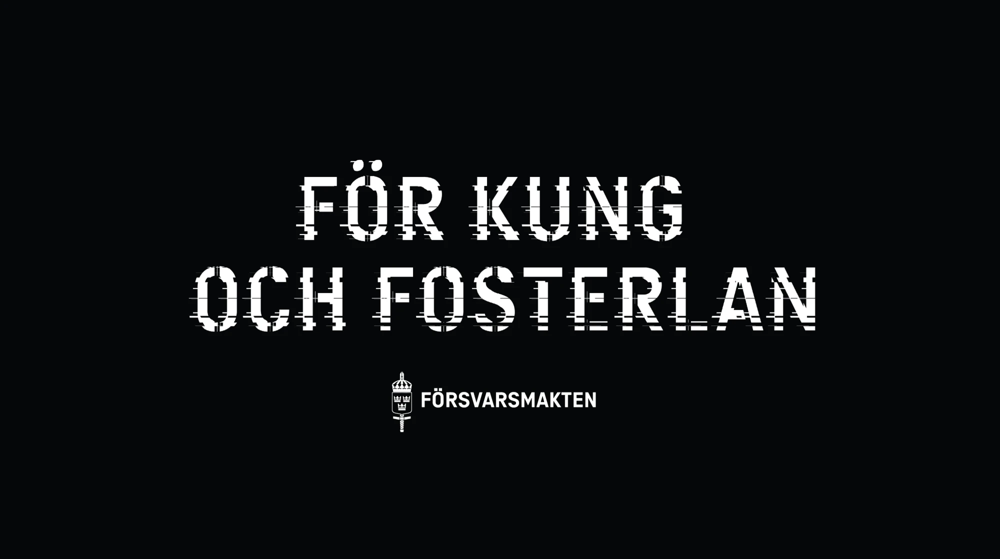
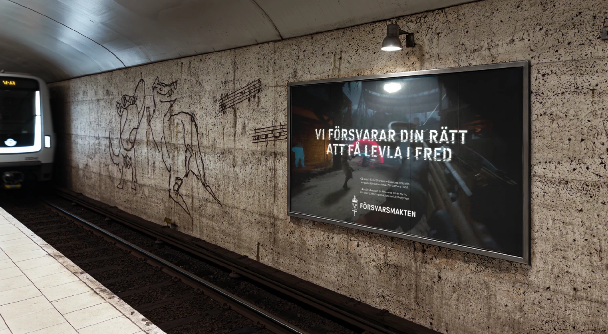
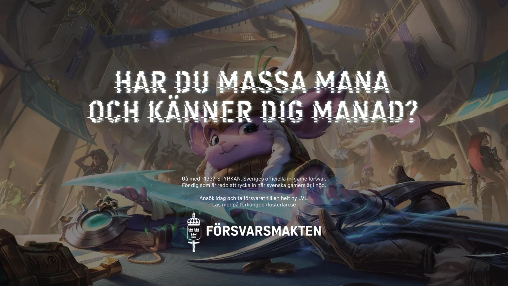
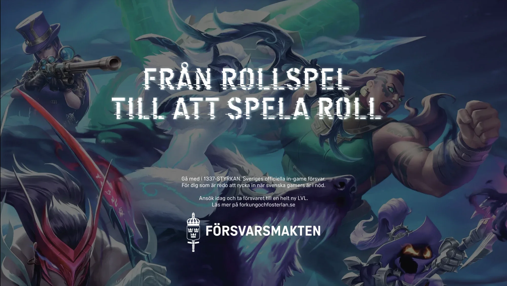
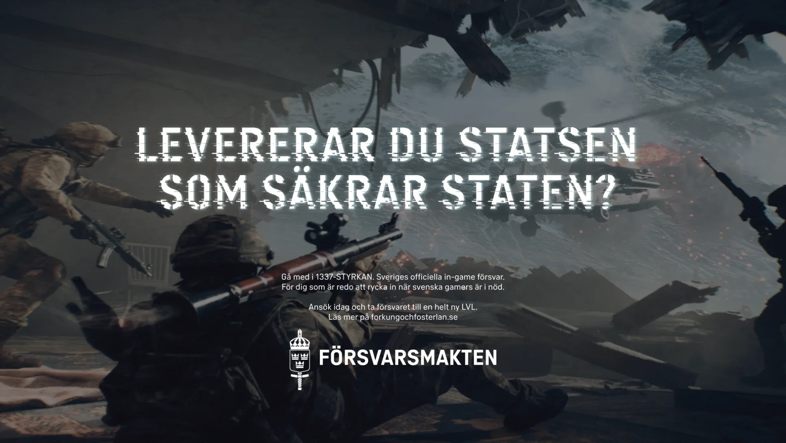
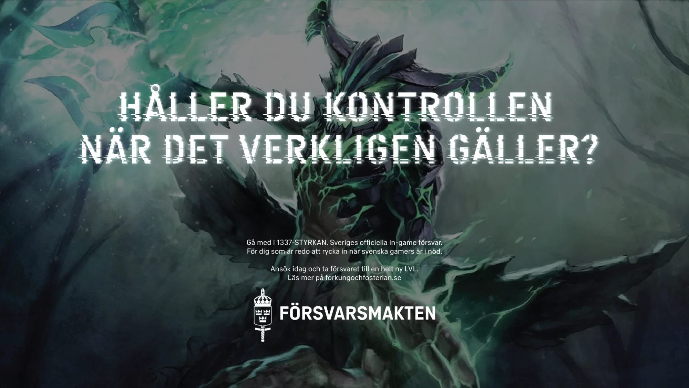
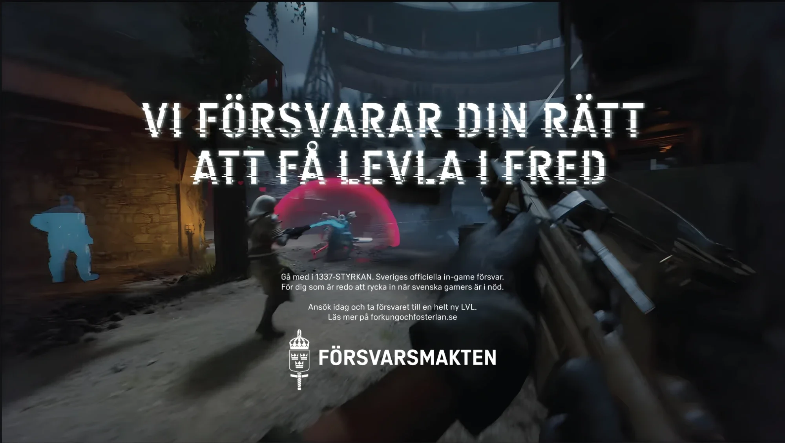
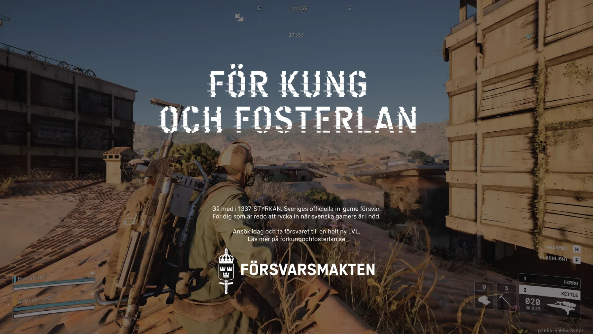
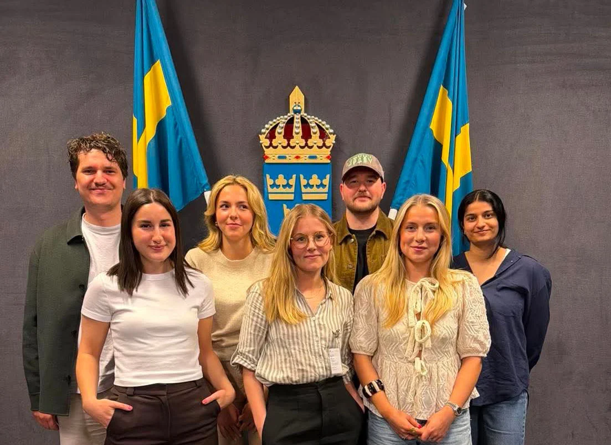
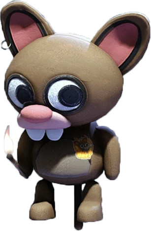

Försvarsmakten
För kung och fosterlan
Our degree project at Berghs, for Försvarsmakten: the world’s first gaming army. A digital reserve force where gamers are deployed to back up their fellow Swedes in-game, through a Discord server where you can also play with, and ask questions to, someone from the Armed Forces.
- Deliverables
- Research, UX/UI Design
- Duration
- 4 Weeks
- Team
- Team of 6,
Sole UX/UI Designer

The brief
Försvarsmakten wanted a credible way to reach young gamers aged 16 to 24, who spend their time in digital spaces where traditional communication rarely gets through. The goal was to change attitudes to military service, so that more of them see the Armed Forces as a future job.
The frame was clear: long-term rather than a one-off campaign, in Swedish, close to the community as a whole, and far from shooting games. No game or app of their own, and nothing that romanticises war or causes worry.
The insight
We started with benchmarking and research: what had been done before, what Försvarsmakten stands for, and what sets the audience apart. We also interviewed gamers. Their answers, together with research on online gaming and young adults’ social wellbeing, showed that the social side of gaming often matters more than the game itself.
Gamers actively look for community and belonging. That insight became the starting point for the whole concept.

The world’s first gaming army
We created a digital reserve force, 1337‑STYRKAN, where gamers are “deployed” to defend their fellow Swedes in-game. Through its own Discord server, a team that is a player short can call for immediate backup from the Armed Forces’ verified reserves.
The server is also a place to play with someone from Försvarsmakten and ask the questions about military service you otherwise wouldn’t dare to. Försvarsmakten meets the audience on their own platform, on their terms.






To join, you take a test of your skills. You link the gaming account you play on, such as Steam, Xbox or PlayStation, by logging in through that platform, and your stats are read from there: hours played, medals and completed missions. Strong enough stats, and you pass. The test isn’t there to keep people out. It makes sure the force speaks to real gamers, the audience it was made for.
Case film
My role
As the sole UX/UI designer in a team of six, I worked on:
- Research and insights, from the start of the project
- The idea of making Försvarsmakten someone you can actually interact with in-game, which feels cool to gamers who aren’t used to it
- UX/UI design for the campaign site
- Designing the Discord server the campaign runs on
Result
Försvarsmakten were positive about the concept, and appreciated the pace from brief to finished idea. They are now looking into whether it can be carried out, for example whether they can run a presence on Discord.

Key learning
Knowledge has to be shared in a way the rest of the group can take in. What is obvious to me isn’t always obvious to others. Communication matters in every project, and with each one I get better at it.
